Operating Documentation
Direction 5440000, Rev# 5
Signa HDxt Service Methods
Module Version 2.0, Version Date 11/4/08
Operating Documentation |
| Required Persons | Procedure |
| 1 | 15 mins |
Follow this process to install the 1.5T, 3.0T, 1.5T (HDx/HDxt/HDe) and 3.0T (HDx/HDxt) Split Head Coil. GE part numbers as follows:
2382458 (3.0T)
2337543 (1.5T)
5145658 (1.5T HDx/HDxt/HDe)
5145659 (3.0T HDx/HDxt)
Standard Hand Tool Set
Connect the BNC terminals of the QD/QHTR box to the coil. The blue labels on the cable and coil should match up, and the cables should not be twisted.
For reverse-ramped magnets, the "I" and "Q" channel cables need to be swapped within the QD box.
1. Remove the bottom cover of the QD box by removing the 4 screws shown in Illustration 1.
Illustration 1: Remove Bottom Cover of QD Box
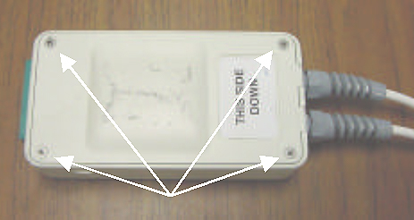
2. Loosen the strain reliefs on the two BNC cables shown in Illustration 2.
Illustration 2: Strain Reliefs on BNC Cables
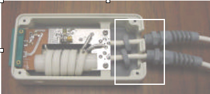
3. Swap the two BNC cables without desoldering from the PCB. (See Illustration 3.)
Illustration 3: Swap Two BNC Cables with Strain Reliefs
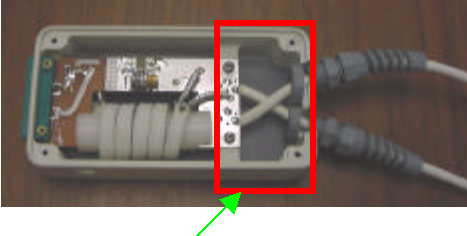
4. Retighten the strain reliefs on the two BNC cables shown in Illustration 3.
5. Replace the bottom cover of the QD box.
6. Locate the blue label on the end of one of the BNC cables. Cover the blue label with a white rectangular label, and affix a new blue label on the end of the other BNC cable.
1. Remove the top and bottom cover of the QD box by removing the 8 screws (4 per side) shown in Illustration 4.
Illustration 4: Remove Top and Bottom Cover
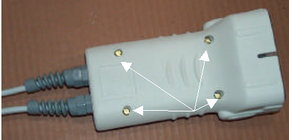
2. Remove the 2 screws holding the circuit board to the cable connector. (See Illustration 5.)
| ||||
| ESD Sensitive Equipment. Make sure to use appropriate precautions before disassembling this equipment. | ||||
Illustration 5: Screws Holding Circuit Board
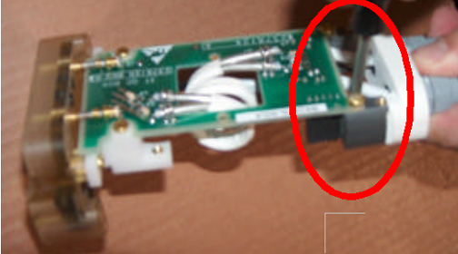
3. Loosen the strain reliefs on the two BNC cables. (See Illustration 6.)
Illustration 6: Strain Reliefs on BNC Cables
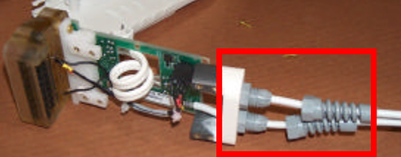
4. Turn the cable connector upside down, effectively twisting the cables without desoldering cables from PCB. (See Illustration 7.)
Illustration 7: Turn Cable Connector Upside Down
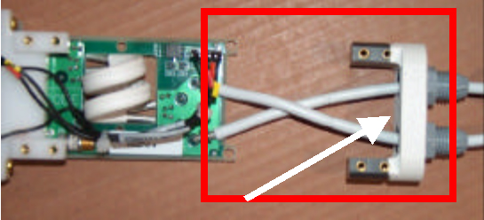
5. Attach the circuit board back to the cable connector, and retighten the strain reliefs on the two BNC cables. Replace the top and bottom covers of the QD box. (See Illustration 8.)
Illustration 8: Reattach Circuit Board Back to Cable Connector
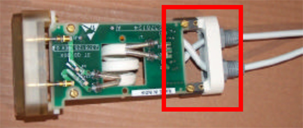
6. Locate the blue label on the end of one of the BNC cables. Cover the blue label with a white rectangular label, and affix a new blue label on the end of the other BNC cable.
1. Remove the bottom cover of the QHTR by removing the 6 screws. (See Illustration 9.)
Illustration 9: Bottom Cover of QHTR
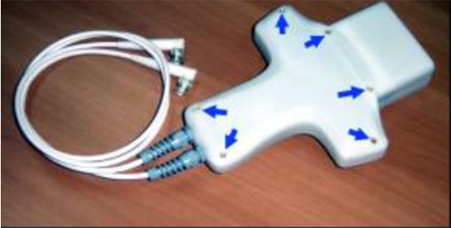
2. Remove the 4 screws holding the circuit board to the connector/cable.
| ||||
| ESD Sensitive Equipment. Make sure to use appropriate precautions before disassembling this equipment. | ||||
3. Loosen the strain relief on the two BNC cables. (See Illustration 10.)
Illustration 10: Loosen Strain Relief
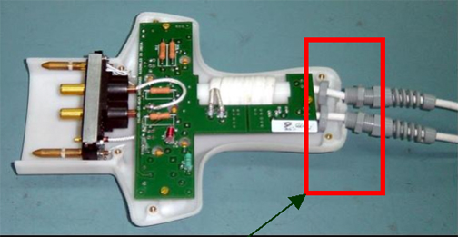
4. Swap the two BNC cables without desoldering from PCB. (See Illustration 11.)
Illustration 11: Swap Two BNC Cables
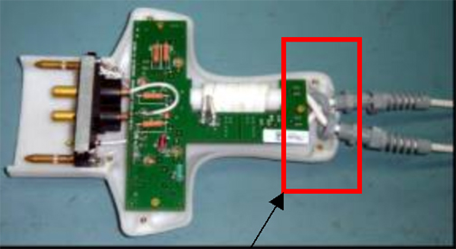
5. Retighten the strain relief on the two BNC cables.
6. Replace the bottom cover of the QHTR box.
7. Locate the blue label on the end of one of the BNC cables. Cover the blue label with a white rectangular label, and affix a new blue label on the end of the other BNC cable.
Add the coil using the Configuration File Manager. Refer to the Service Methods CD => Software => System Level Software Utilities => Configuration File Manager. The cables from the QD box to the Head Coil should always be straight with no crossovers or loops evident from the outside.
Perform the Split Head Coil SNR Test.
On a periodic basis, such as during installation and planned maintenance, perform the quality assurance checks as outlined below to ensure the coil is operating properly.
Check external cable for cracks or cuts.
Check plastic screws for tightness, damage or absence.
Perform Coil Imaging Performance Verification in the Split Head Coil SNR Test.
If SNR is trending downward, check the interconnect pins for damage or abuse.